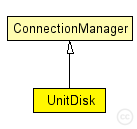

This documentation is released under the Creative Commons license
This documentation is released under the Creative Commons license(no description)
The following diagram shows usage relationships between types. Unresolved types are missing from the diagram. Click here to see the full picture.
The following diagram shows inheritance relationships for this type. Unresolved types are missing from the diagram. Click here to see the full picture.
| Name | Type | Description |
|---|---|---|
| ConnectionManager | simple module |
Module to control all connection related stuff |
| Name | Type | Default value | Description |
|---|---|---|---|
| coreDebug | bool |
debug switch for core framework |
|
| sendDirect | bool |
send directly to the node or create separate gates for every connection |
|
| pMax | double |
maximum sending power used for this network [mW] |
|
| sat | double |
minimum signal attenuation threshold [dBm] |
|
| alpha | double |
minimum path loss coefficient |
|
| carrierFrequency | double |
minimum carrier frequency of the channel [Hz] |
|
| drawMaxIntfDist | bool | false |
should the maximum interference distance be displayed for each node? |
| radioRange | double |
| Name | Value | Description |
|---|---|---|
| display | i=abstract/multicast |
simple UnitDisk extends ConnectionManager { parameters: double radioRange @unit(m); }
This documentation is released under the Creative Commons license